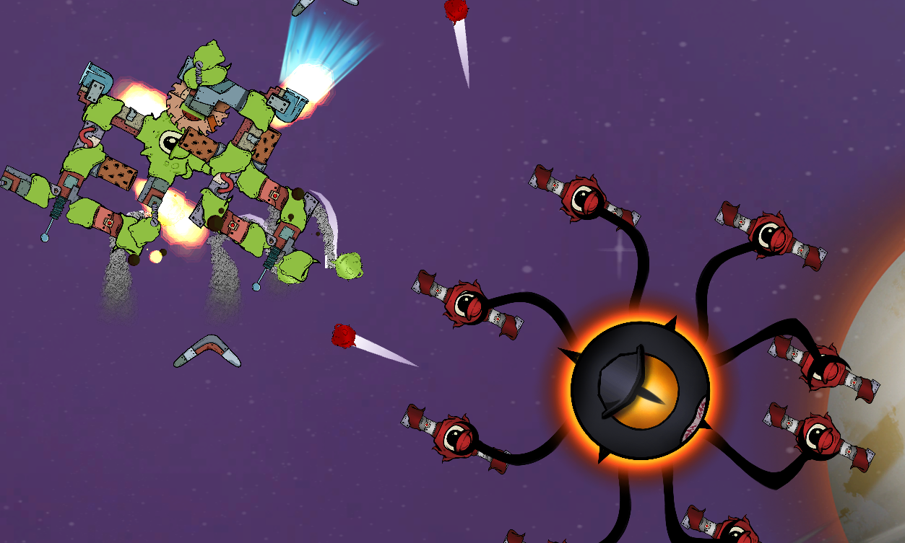

Symbi-Node

Symbi-Node is a survivor-like game developed in a 72-hour game jam. I implemented an enemy spawn and stage progression system using ScriptableObjects to efficiently store crucial data — providing flexibility for quick adjustments during the time-constrained jam.
Code Snippets
Object Pooler
public class ObjectPooler : MonoBehaviour
{
public List<Pool> PoolList = new List<Pool>();
public ObjectPooler Instance { get; private set; }
private void Awake()
{
if (Instance != null)
Destroy(this.gameObject);
else
Instance = this;
}
private void Start()
{
foreach (var pool in PoolList)
{
for (int i = 0; i < pool.PoolStartSize; i++)
{
GameObject newObject = Instantiate(pool.Prefab) as GameObject;
pool.ObjectPool.Enqueue(newObject);
newObject.SetActive(false);
}
}
}
public GameObject GetObject(string poolTag)
{
var desiredPool = PoolList.Find(p => p.Tag == poolTag);
if (desiredPool.ObjectPool.Count > 0)
{
GameObject newObject = desiredPool.ObjectPool.Dequeue();
newObject.SetActive(true);
return newObject;
}
return Instantiate(desiredPool.Prefab) as GameObject;
}
public void ReturnObject(string poolTag, GameObject objectToReturn)
{
var desiredPool = PoolList.Find(p => p.Tag == poolTag);
desiredPool.ObjectPool.Enqueue(objectToReturn);
objectToReturn.SetActive(false);
}
[Serializable]
public class Pool
{
public string Tag;
public GameObject Prefab;
public int PoolStartSize = 5;
public Queue<GameObject> ObjectPool = new Queue<GameObject>();
}
}Spawner
public class SpawnerAdvanced : MonoBehaviour
{
[SerializeField] private List<StageSO> allStages = new List<StageSO>();
[SerializeField] private GameObject bossPrefab;
[SerializeField] private float bossSpawnTime;
public List<Transform> spawnPlaces;
private bool _bossSpawned = false;
private StageSO _currentStage;
private ObjectPooler _objectPool;
private int _stageIndex = 0;
public Queue<GameObject> EnemyQueue = new Queue<GameObject>();
private void Start()
{
_objectPool = FindObjectOfType<ObjectPooler>();
_currentStage = allStages[_stageIndex];
SetEnemyQueue();
Invoke(nameof(SpawnBoss), bossSpawnTime);
}
private void FixedUpdate()
{
SpawnNonBossEnemies();
}
private void SetEnemyQueue()
{
foreach (var enemy in _currentStage.enemies)
EnemyQueue.Enqueue(enemy);
}
private void SpawnNonBossEnemies()
{
if (_bossSpawned) return;
_currentStage.timeSinceSpawn += Time.deltaTime;
if (_currentStage.timeSinceSpawn < _currentStage.timeTakesToSpawn) return;
if (EnemyQueue.Count <= 0)
{
if (_stageIndex + 1 != allStages.Count)
{
_stageIndex++;
_currentStage = allStages[_stageIndex];
SetEnemyQueue();
}
}
else
{
GameObject newObject = _objectPool.GetObject(EnemyQueue.Dequeue());
newObject.transform.position = spawnPlaces[Random.Range(0, spawnPlaces.Count)].position;
newObject.SetActive(true);
_currentStage.timeSinceSpawn = 0f;
}
}
private void SpawnBoss()
{
Instantiate(bossPrefab, spawnPlaces[Random.Range(0, spawnPlaces.Count)]);
_bossSpawned = true;
}
}